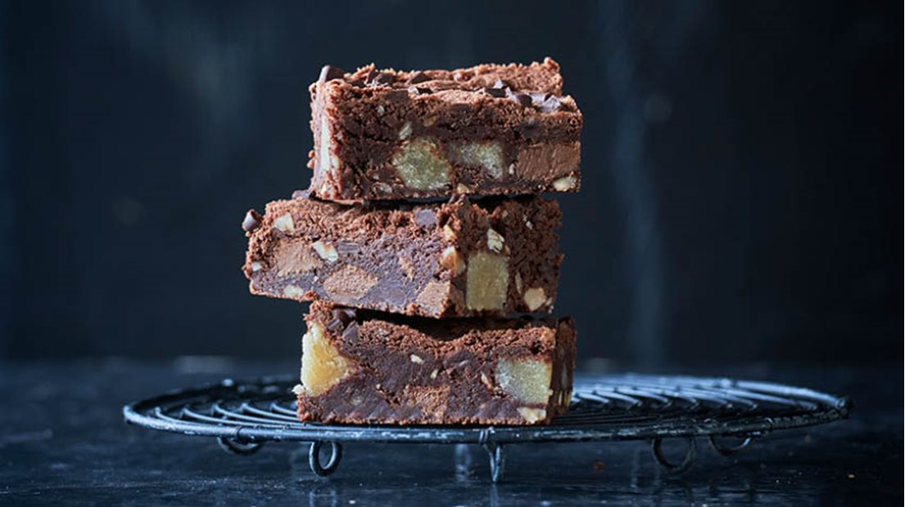

Opskrift
Luksus brownie

Disse lækre brownies er velegnet som dessert eller til kaffen, hvor du skal forkæles lidt ekstra. Som dessert er den god at servere sammen med en kugle is. Denne opskrift er fyldt med marcipan, nougat og hasselnødder, men du kan også skifte hasselnødderne ud med valnødder eller pekannødder. Du kan læse alle instruktionerne til opskriften herunder.
Indgredienser
- 150g smør
- 200g chokolade
- 3 æg
- 200g sukker
- 100g hvedemel
- Nougat
- Hasselnødder
- Marcipan
Fremgangsmåde
- Smelt smørret i en gryde, tilsæt hakket chokolade og smelt det under omrøring.
- Pisk æg og sukker luftigt og skummende.
- Sigt hvedemelet i æggeblandingen og rør det sammen med chokoladesmørret.
- Skær nougat og marcipan i små tern og vend dem i dejen sammen med hasselnødder.
- Kom dejen i en lille smurt bradepande ca. 18x25 cm. og bag den 170°C i ca. 40 min. Lad kagen blive helt kold inden servering.
Find flere opskrifter her:
Odense marcipan
Menu
Profil